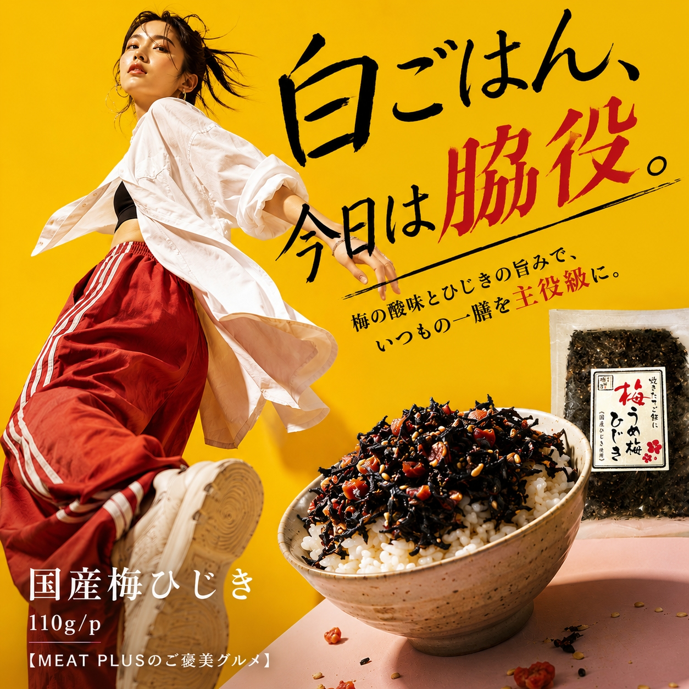
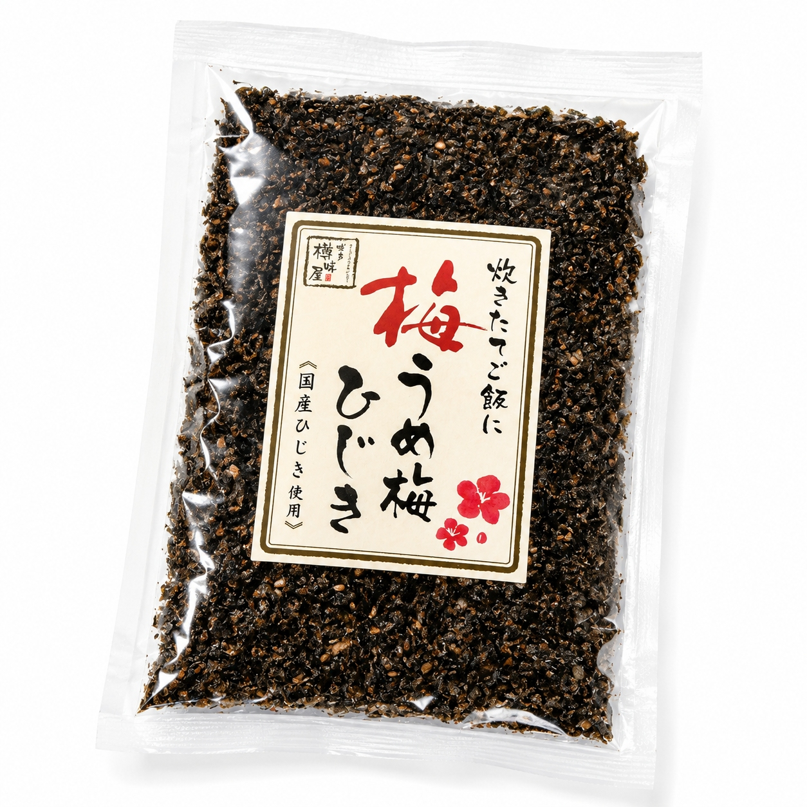
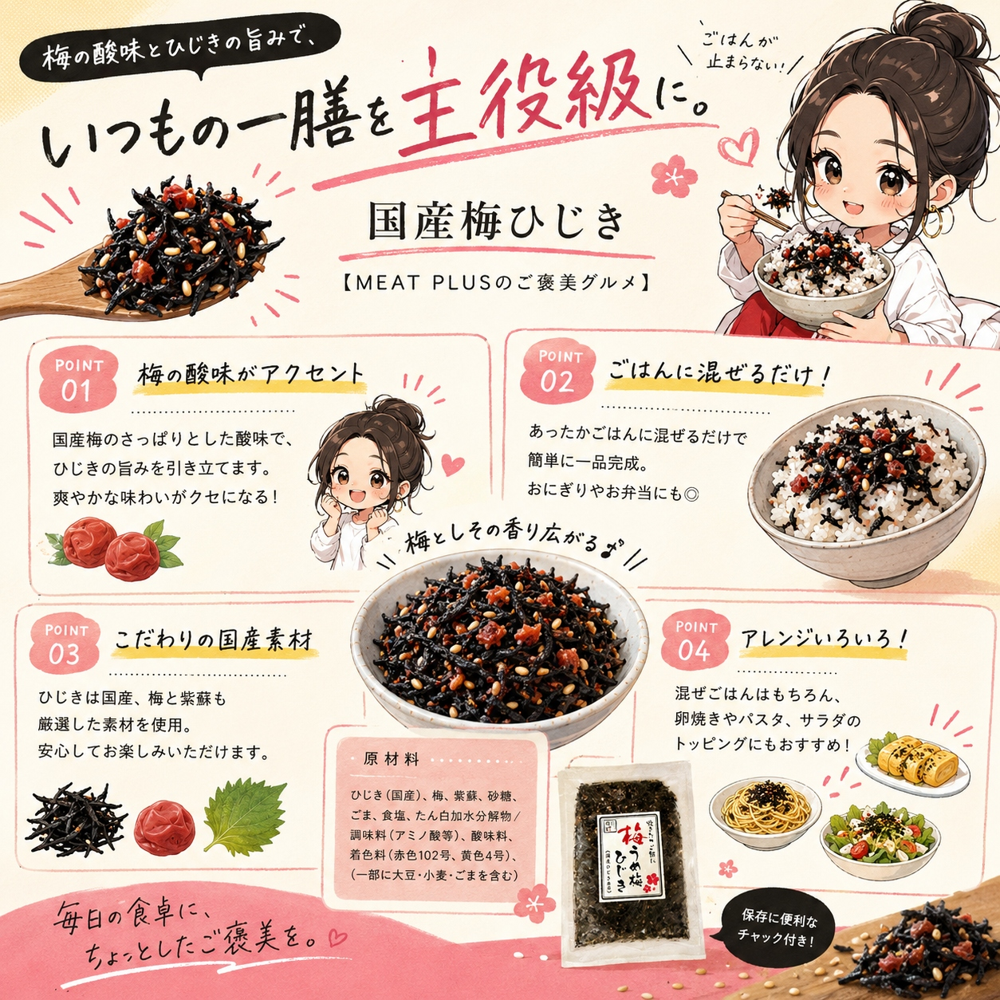

SCENE 01

i 惣菜・加工品
【国産ひじきの旨味とカリカリ梅の酸味。ご飯がすすむ、食卓のもう一品。】
ほかほかのご飯にのせるだけで、食卓がぱっと華やぐ。そんな情景が目に浮かぶ、こだわりの「国産梅ひじき」をお届けします。肉厚で柔らかな国産ひじきを、風味豊かな甘じょっぱい味付けで丁寧に炊き上げました。そこに加わるのは、食感が楽しいカリカリ梅と爽やかな紫蘇の香り。口に運べば、ひじきの旨味と梅の心地よい酸味が広がり、あとを引く美味しさです。白いご飯はもちろん、おにぎりや混ぜご飯の素として、またパスタや卵焼きの具材、冷奴のトッピングなど、アレンジは自由自在。常温で保存できるので、忙しい日の食卓やお弁当の彩りに、いつでも手軽にお使いいただけます。ご家庭の常備菜に、この一品を加えてみませんか。いつもの食事が、もっと豊かで楽しい時間になりますように。
公式サイトへ移動します。価格・在庫・配送条件は移動先で最終確認してください。


PRODUCT INFORMATION
ひじき（国産）、梅、紫蘇、砂糖、ごま、食塩、たん白加水分解物/調味料（アミノ酸等）、酸味料、着色料（赤色102号、黄色4号）、（一部に大豆・小麦・ごまを含む）
FAQ
開封後は風味を損なわないよう、必ず冷蔵庫で保管し、お早めにお召し上がりください。取り分ける際は、清潔な箸やスプーンをお使いください。
定番の温かいご飯やおにぎりはもちろん、茹でたパスタと和えたり、卵焼きの具にしたり、マヨネーズと混ぜてパンにのせるのもおすすめです。冷奴やサラダのトッピングとしても美味しくお召し上がりいただけます。
MEAT PLUS OFFICIAL SHOP
仕入れ・加工・梱包・発送まで自社で行うMEAT PLUSの公式オンラインショップでご注文いただけます。
公式オンラインショップで購入する